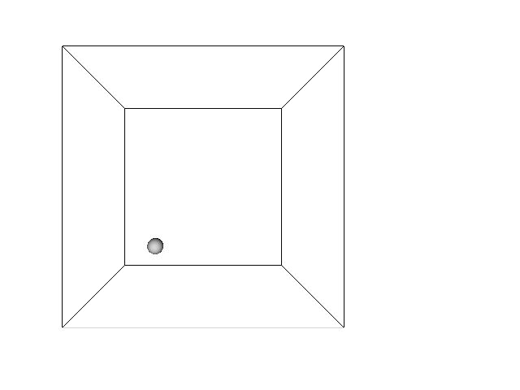

OpenGL, PyOpenGL
3 boyutlu simülasyonlar için OpenGL ünlü bir paket. Çeşitli objeler, satıhlar, onları gösteren bir kamera gibi kavramların kodlaması basit. Birkaç örnek C++ kodunu SPH yazısında gördük. Ek bazı kodlar [2]'den alınmıştır,
bouncingballs.cpp, checkeredtriangles.cpp, colorcube.cpp, cometride.cpp, fish.cpp, litsolids.cpp, moon.cpp, robotarm.cpp, sierpinski2d.cpp, sierpinski3d.cpp, spinningsquare.cpp, tetrahedron.cpp, torus.cpp, triangle.cpp
Derlemek icin
sudo apt-get install mesa-common-dev libgl1-mesa-dev libglu1-mesa-dev freeglut3-dev
Sonra
g++ dosya.cpp -lX11 -lGL -lGLU -lglut -g -Wall -O2 -o islet.exe
Alttaki kodlarda [2]'den alınan bir uçuş simulatörü var
fly.cpp geometry.h landscape.cpp landscape.h ship.h
Derlemek icin
g++ -c landscape.cpp -o landscape.o -lX11 -lGL -lGLU -lglut -g -Wall -O2
g++ fly.cpp -g -Wall -O2 -o r.exe -lX11 -lGL -lGLU -lglut landscape.o
Python
Kurulus
pip install PyOpenGL==3.1.0
[1] kodu baz alınarak bir topun düşüşünü, duvarlara, yere çarpmasını
simüle eden bir kod altta görülüyor. Top sayısını self.n ile
arttırabiliriz.
from OpenGL.GL import *
from OpenGL.GLU import *
from OpenGL.GLUT import *
from random import random
from PIL import Image
from PIL import ImageOps
import sys
class Simulation:
def __init__(self):
self.i = 0
self.n = 1
self.r = 0.1
self.g = 9.8
self.dt = 0.01
self.cor = 0.6
self.balls = []
self.tm = 0.0
self.th = 0.0
self.mmax = 1.0-self.r
self.mmin = -1.0+self.r
self.right = False
self.left = False
def init(self):
for i in range(self.n):
p = [
self.mmin + random()*(self.mmax-self.mmin),
self.mmin + random()*(self.mmax-self.mmin),
0.9]
v = [
-1.5 + random()*3.0,
-1.5 + random()*3.0,
-1.0 + random()*2.0]
self.balls.append({'pos':p,'vel':v})
tm = 0.0
glEnable(GL_LIGHTING)
glEnable(GL_LIGHT0)
glEnable(GL_DEPTH_TEST)
glClearColor(1.0,1.0,1.0,1.0)
glMatrixMode(GL_PROJECTION)
glLoadIdentity()
gluPerspective(60.0,1.0,1.0,50.0)
glTranslatef(0.0,0.0,-3.5)
glMatrixMode(GL_MODELVIEW)
glLoadIdentity()
def update(self):
for b in self.balls:
b['vel'][2] += -self.g*self.dt
b['pos'][0] += b['vel'][0]*self.dt
b['pos'][1] += b['vel'][1]*self.dt
b['pos'][2] += b['vel'][2]*self.dt
if (abs(b['pos'][0]) >= self.mmax):
b['vel'][0] *= -self.cor
if b['pos'][0] < 0:
b['pos'][0] = self.mmin
else:
b['pos'][0] = self.mmax
if (abs(b['pos'][1]) >= self.mmax):
b['vel'][1] *= -self.cor
if b['pos'][1] < 0:
b['pos'][1] = self.mmin
else:
b['pos'][1] = self.mmax
if (abs(b['pos'][2]) >= self.mmax):
b['vel'][2] *= -self.cor
if b['pos'][2] < 0:
b['pos'][2] = self.mmin
else:
b['pos'][2] = self.mmax
# kamerayi saga sola dondurmek icin
if self.right:
self.th += 0.2
if self.th>360.0:
self.th -= 360.0
if self.left:
self.th -= 0.2
if self.th>360.0:
self.th -= 360.0
glutPostRedisplay()
def display(self):
glClear( GL_COLOR_BUFFER_BIT | GL_DEPTH_BUFFER_BIT)
glPushMatrix()
glRotatef(self.th,0.0,1.0,0.0)
glRotatef(90.0,-1.0,0.0,0.0)
glutWireCube(2.0)
for b in self.balls:
glPushMatrix()
glTranslatef(b['pos'][0],b['pos'][1],b['pos'][2])
glutSolidSphere(self.r,50,50)
glPopMatrix()
glPopMatrix()
glutSwapBuffers()
# her 40'inci resmi diske png olarak yaz
if self.i % 40 == 0:
width,height = 640,480
data = glReadPixels(0, 0, width, height, GL_RGBA, GL_UNSIGNED_BYTE)
image = Image.frombytes("RGBA", (width, height), data)
image = ImageOps.flip(image)
image.save('/tmp/glutout-%03d.png' % self.i, 'PNG')
self.i += 1
def mouse(self,button,state,x,y):
if button == GLUT_LEFT_BUTTON:
self.right = not state
elif button == GLUT_RIGHT_BUTTON:
self.left = not state
if __name__ == '__main__':
s = Simulation()
glutInit(())
glutInitDisplayMode(GLUT_DOUBLE | GLUT_RGB | GLUT_DEPTH)
glutInitWindowSize(500,500)
glutCreateWindow("GLUT Bouncing Ball in Python")
glutDisplayFunc(s.display)
glutIdleFunc(s.update)
glutMouseFunc(s.mouse)
s.init()
glutMainLoop()
Sonuc

Dikkat üstteki kodda duvar çarpım fiziği var fakat topların birbirine çarpma fiziği yok.
Görüntüsüz (Headless) İsletmek
Bazen uzun sürebilecek, ya da otomize şekilde script içinden grafik
rutinleri çağırmak isteyebiliriz, ve program işlerken bir pencere
açılip görüntü gösterilsin istemiyoruz. Bu durumda normal bir Unix
script çağırır gibi OpenGL ya da PyOpenGL çağrıları yapabiliriz,
görüntüyü işletim sistemi seviyesine yakalayıp göstermemek
lazım. xvfb ile bunu yapabiliriz, Ubuntu'da
sudo apt-get install xvfb
İşletmek için
xvfb-run -s "-screen 0 1x1x24" python -u script.py
Görüntü gösterilmeyecek fakat program işleyecek, eğer kod içinde png dosyaları yazıyorsak mesela bunların normal olduğu gibi üretildiğini göreceğiz. .
Kaynaklar
[1] http://fab.cba.mit.edu/classes/864.05/people/knorton/01-balls/
[2] https://cs.lmu.edu/~ray/notes/openglexamples/
Yukarı